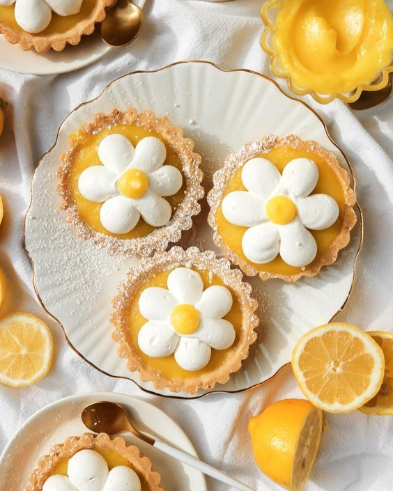

McFarlan Bakery is an authentic
"made from scratch" bake shop located on Main Street in the heart of Historic Downtown Hendersonville, North Carolina.
We believe in using good old-fashioned methods and recipes, and think you’ll taste why we’ve kept it that way for over 90 years! We make all your favorites–like donuts, pastries, cookies, breads,
and cakes–and are happy to talk about custom orders.
Whether it’s your first time, or you’ve grown up eating our baked goods, we thank you for nearly a century of support.
We can’t wait to see you!
